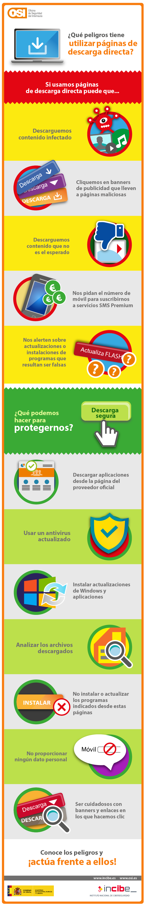

Como ya hemos visto, son muchas las aplicaciones para dispositivos móviles que realizan acciones dañinas o que repercuten negativamente en el usuario del dispositivo afectado.
Estas aplicaciones están diseñadas expresamente para realizar diferentes acciones como obtener información sensible de los usuarios, suscripción a servicios de mensajería premium, o controlar los dispositivos para llevar actividades maliciosas.
- Recomendaciones para la descarga de aplicaciones
Teniendo en cuenta las nuevas tendencias utilizadas por los ciberdelincuentes, es importante que consideres los siguientes aspectos antes de instalar aplicaciones en tus dispositivos:
- Descargar aplicaciones de las tiendas oficiales
Las tienda oficial para Android es Google Play y en el caso de iOS Apple Store.
No se considera una buena práctica descargar apps de sitios externos ya que desconoces quien la ha subido, si está manipulada, etc. Las probabilidades de descargar aplicaciones maliciosas desde las tiendas oficiales se reducen. Sin embargo, éstas no son completamente seguras ya que algunas de las aplicaciones disponibles en las tiendas oficiales también podrían ser maliciosas, por lo que esta no es la única medida de seguridad que debes tomar a la hora de instalar una aplicación, como veremos a continuación.
- Evitar usar clientes no oficiales de aplicaciones para evitar riesgos
En caso de hacerlo, deberemos asegurarnos quiénes son los desarrolladores, si ofrecen garantías de seguridad, etc.
- Observar la procedencia de la aplicación
Si los desarrolladores de la aplicación son populares esto es un buen indicador para comprobar su legitimidad.
- Comprobar el número de descargas, la puntuación (rating) y comentarios
Estos tres aspectos son otra fuente de información con la que podremos conocer las experiencias de los usuarios a la hora de instalar y usar la aplicación.
- Investigar otras fuentes de información independientes a las tiendas oficiales
Si dudas sobre de la legitimidad de la aplicación, también es recomendable consultar otras fuentes. Algunos comentarios en foros, blogs, etc. pueden responder tus dudas.
- Revisión de permisos en aplicaciones
Antes de descargar una aplicación revisa siempre que los permisos que te solicita son adecuados y acordes a la finalidad de la aplicación.
También es una buena práctica revisar regularmente las aplicaciones instaladas para evitar que se haya instalado algo sin ser consciente de ello y revisar también los permisos que solicitan las aplicaciones que tengas instaladas. ¿Cuáles deberías desinstalar? Por supuesto las que no uses, pero también aquellas que, por poner un ejemplo, pidan permiso para acceder a tus contactos telefónicos cuando se trata de una aplicación que no los necesita.
Revisión de permisos concedidos a aplicaciones
Infografía: «¿Qué peligros tiene utilizar páginas de descarga directa?»

Para ver mejor clica aquí. Fuente (OSI) INCIBE